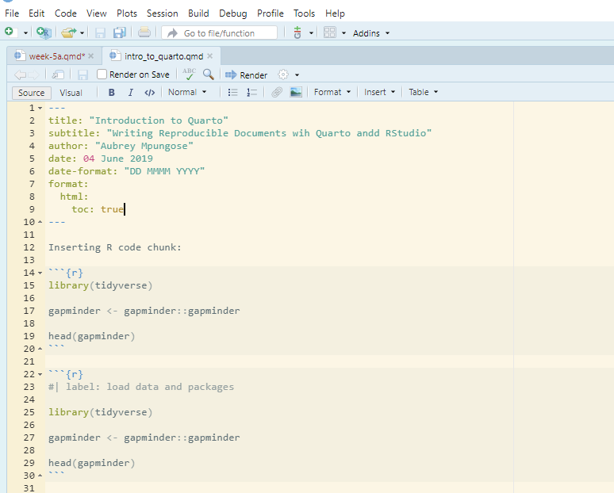

Communicating and Reporting with Quarto
5.1 Introduction to Quarto
This week I would like to introduce you to writing reproducible reports using Quarto, a next generation “open-source scientific and technical publishing system”. It is an integrated ecosystem, where you can integrate your code, reports, figures, references, tables etc. in one environment. With Quarto you can write:
Books (examples include: R for Data Science, Second dition; Python for Data Analysis Hands-On Programming with R)
Reproducible journal papers: (some examples: Elsevier Template, )
Website: This website is written with Quarto, hosted in GitHub all for free
Presentations: (examples: This presentation)
Dynamic reports
Blogs: personal, work etc. (examples: )
And more! See examples on the Quarto website
Quarto can render documents in multiple formats, including HTML, PDF, word formats, etc.
5.2 How does Quarto Work?
For all my writing, I have shifted from what Kieran Healy calls the “Office Model” to an “Engineering Model”:
Office solutions tend towards a cluster of tools where something like Microsoft Word is at the center of your work. A Word file or set of files is the most “real” thing in your project. Changes to your work are tracked inside that file or files. Citation and reference managers plug into those files. The outputs of data analyses—tables, figures—get cut and pasted in as well, or are kept alongside them. The master document may be passed around from person to person to be edited and updated.4 The final output is exported from it, perhaps to PDF or to HTML, but maybe most often the final output just is the .docx file, cleaned up and with the track changes feature turned off.
In the Engineering model, meanwhile, plain text files are at the center of your work. The most “real” thing in your project will either be those files or, more likely, the version control repository that stores the project. Changes are tracked outside of files, again using a version control system. Data analysis is managed in code that produces outputs in (ideally) a known and reproducible manner. Citation and reference management will likely also be done in plain text, as with a BibTeX .bib file. Final outputs are assembled from the plain text and turned to .tex, .html, or .pdf using some kind of typesetting or conversion tool. Very often, because of some unavoidable facts about the world, the final output of this kind of solution is also a .docx file.
Quarto then is the part of the “engineering model”. It mainly uses Markdown format for writing. “Markdown is a lightweight markup language that you can use to add formatting elements to plaintext text documents”.
5.3 Let’s Practice
You will need the following:
R and RStudio (or any IDE such as VSCode etc)
Quarto: If you are using RStudio, Quarto is already installed. If you using other IDEs such as VSCode, download and install Quarto from the Quarto website
Zotero: For references bibliography and citations. Download and install Zotero from Zotero website
Better BibTeX (BBT): BBT is a Zotero extension that manages things like citation keys. You can download BBT from: https://retorque.re/zotero-better-bibtex/.
All these tools are open source and available for free!
5.3.1 Openning Quarto
First create a directory/folder where you will save all the files. For example I will create a folder named “intro_to_quarto” in my documents directory. This is where you will store all your files.
In RStudio, go to FILE -> New File -> Quarto Document
On the pop-up window, just select “Create Empty Document”. A blank Quarto page will be open:
Save the document to folder that you have created
5.3.2 YAMl
The first part of the page is know as YAML, it contains the information about the document, this include:
| Option | Description |
|---|---|
title |
tittle of the document |
subtitle |
subtitle of the document |
author |
Author |
date |
date of the document was published |
format |
output of the document: options include html, docx, pdf, etc |
toc |
table of contents |
number-sections |
Automatically number headings and sections |
bibliography |
a file containing references |
csl |
referencing style |
There are many other options that you can use to customise your document; you can a complete guide here. Let us experiment with few options.
Look how I have customised my yaml:
Experiment with other options. Please not that this must be should start with — and end with —.
5.3.3 Writing using Markdown
Headings
You insert headings by using # at the beginning of a sentence:
Update your document by including headings as follows:
---
title: "Introduction to Quarto"
subtitle: "Writing Reproducible Documents wih Quarto andd RStudio"
author: "Aubrey Mpungose"
date: 04 June 2023
date-format: "DD MMMM YYYY"
format:
html:
toc: true
---
# Section 1
## Section 1.1
### Section 1.1.1
#### Section 1.1.1.1
##### Other section
###### Other sectionSave and render the document by clicking on the “Render” option as highlighted on the image below
Formating texts
Update your document as the following and render the document, obviously your name is not Aubrey Mpungose:
---
title: "Introduction to Quarto"
subtitle: "Writing Reproducible Documents wih Quarto andd RStudio"
author: "Aubrey Mpungose"
date: 04 June 2019
date-format: "DD MMMM YYYY"
format:
html:
toc: true
---
# 1. Italics
My name is *Aubrey Mpungose*, I love doing *data science*
I can also format text in _italics_
# 2. Bold
This is how I format text into **BOLD**
# 3. Bold and Italics
I can also format text to be ***Bold and Italic***
# 4. Example
My name is *Aubrey Mpungose*, I love doing _data science_. Some people think markdown syntax is difficult, but it is not: for example, I can make text to be **Bold**. I can also format text format text to be ***bold and italic***The output will be the following:
Figures/Images
Let’s say you have an image named meerkat.png in your folder, update your document with the following:
This will inclde the meerkat image in the document. Note that inside [] is the caption, in my case, “A meerkat”. You must put parentheses () after with no spaces.

There are other options for figures including width, length, etc. You can find more from Quarto website.
Computation and code
You can include R, Python, Javascript and other programming languages code within quarto document. We will show some examples using R and gapminder data that we have been using. For example, to insert R code, you insert a code chunk begining with {r} and ends with
To load the gapminder data and the tidyverse package, insert the following and render the document:
You can also label code chunks:

There are many code chunk options that you can include depending on your needs.
Figures
You can insert figures within quarto document:
Insert tables
The gt package has beautiful table formats. install the package first:
Then Run the following code:
| country | continent | year | lifeExp | pop | gdpPercap |
|---|---|---|---|---|---|
| Japan | Asia | 2007 | 82.603 | 127467972 | 31656.07 |
| Hong Kong, China | Asia | 2007 | 82.208 | 6980412 | 39724.98 |
| Iceland | Europe | 2007 | 81.757 | 301931 | 36180.79 |
| Switzerland | Europe | 2007 | 81.701 | 7554661 | 37506.42 |
| Australia | Oceania | 2007 | 81.235 | 20434176 | 34435.37 |
| Spain | Europe | 2007 | 80.941 | 40448191 | 28821.06 |
| Sweden | Europe | 2007 | 80.884 | 9031088 | 33859.75 |
| Israel | Asia | 2007 | 80.745 | 6426679 | 25523.28 |
| France | Europe | 2007 | 80.657 | 61083916 | 30470.02 |
| Canada | Americas | 2007 | 80.653 | 33390141 | 36319.24 |
You can also customise your tables to include title, subtitle and rename column names
gapminder |>
filter(year == 2007) |>
arrange(desc(lifeExp)) |>
head(10) |>
gt() |>
tab_header(title = md("**Highest Life Expectancy**")) |>
cols_label(country = md("**Country**"),
continent = md("**Continent**"),
year = md("**Year**"),
lifeExp = md("**Life expectancy**"),
pop = md("**Population**"),
gdpPercap = md("**GDP per capita**"))| Highest Life Expectancy | |||||
| Country | Continent | Year | Life expectancy | Population | GDP per capita |
|---|---|---|---|---|---|
| Japan | Asia | 2007 | 82.603 | 127467972 | 31656.07 |
| Hong Kong, China | Asia | 2007 | 82.208 | 6980412 | 39724.98 |
| Iceland | Europe | 2007 | 81.757 | 301931 | 36180.79 |
| Switzerland | Europe | 2007 | 81.701 | 7554661 | 37506.42 |
| Australia | Oceania | 2007 | 81.235 | 20434176 | 34435.37 |
| Spain | Europe | 2007 | 80.941 | 40448191 | 28821.06 |
| Sweden | Europe | 2007 | 80.884 | 9031088 | 33859.75 |
| Israel | Asia | 2007 | 80.745 | 6426679 | 25523.28 |
| France | Europe | 2007 | 80.657 | 61083916 | 30470.02 |
| Canada | Americas | 2007 | 80.653 | 33390141 | 36319.24 |
Note that we included md(** **) to specify that this is a markdown syntax and we want to make text bold.
I will explain how include citations and bibliography in class.